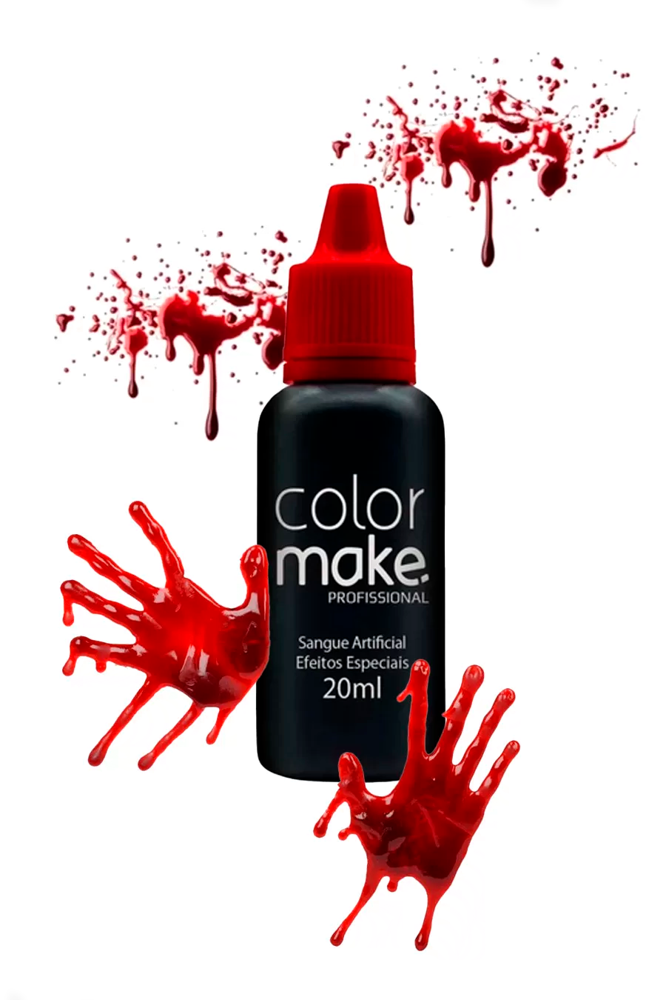

Deixe sua fantasia de Halloween ainda mais assustadora com esta receita simples e segura de sangue falso.
Use o sangue falso nas roupas rasgadas para um efeito ainda mais realista.
Pingue um pouco nas janelas, portas ou copos para dar um toque assustador à festa.
Ideal para simular cortes e ferimentos (use sempre produtos seguros para pele!).